Префектура Фукуока · Китакюсю · ремесло
Кокура-ори: полосатая ткань из Китакюсю, которую вернули из одного лоскута
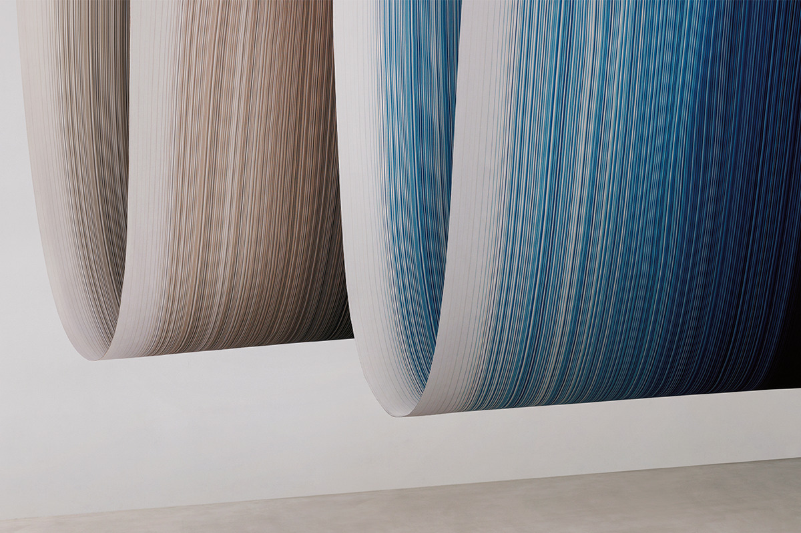
Плотную хлопковую ткань из Кокуры носил ещё Иэясу Токугава, а потом о ней забыли почти на полвека. Мастерица из Китакюсю восстановила её по старому лоскуту, а её семья превратила местную полоску в бренд, который знают далеко за пределами Японии.
История
Ткань, которую «не пробить копьём»
Кокура, старый замковый город на севере Кюсю, сегодня часть Китакюсю, крупнейшего города на севере префектуры Фукуока. Здесь с эпохи Эдо ткали кокура-ори: плотный и прочный хлопок, из которого шили накидки хаори и широкие штаны хакама. Такую одежду любил Иэясу Токугава (1543–1616), основатель сёгуната, который правил Японией больше двух с половиной веков.
Про кокура-ори говорили, что её «не пробить даже копьём». При этом ткань не грубая: тонкие нити сплетены так плотно, что поверхность блестит и на ощупь напоминает выделанную кожу. Секрет в соотношении нитей. Обычно нитей основы и утка поровну, а здесь основы почти вдвое больше, поэтому уток почти не виден и вертикальные полосы будто выступают над тканью.
В эпоху Мэйдзи из кокура-ори шили школьную форму по всей стране. Серая ткань с белыми крапинками, «симофури», стала символом «банкара», студентов, которые нарочито небрежно носили форму. Но к началу эпохи Сёва спрос пропал, и ткань перестали делать.
Возрождение
Как ткань вернули из лоскута
Прошло несколько десятилетий, и мастерица по крашению и ткачеству из Китакюсю наткнулась на обрывок старой кокура-ори. Её поразила объёмная красота полос. Она изучала переплетение нитей, снова и снова делала пробные куски, переделывала ткацкий станок и в 1984 году восстановила ткань.
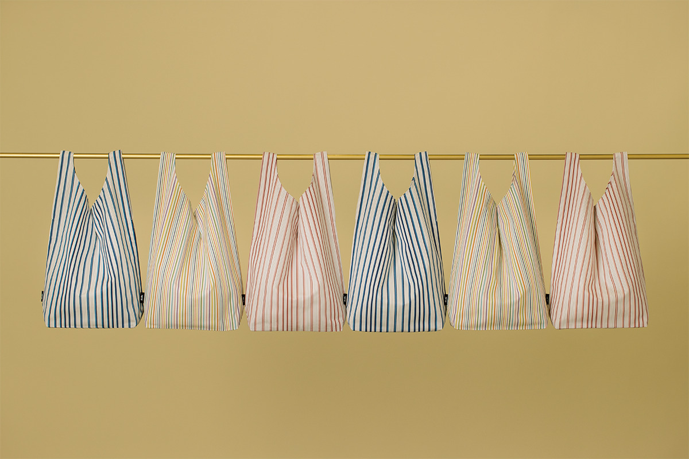
В 2007 году мастерица вместе с сестрой и племянницей основала бренд KOKURA SHIMA SHIMA, ткань для него ткут на машинах. Удачной оказалась сама идея: фирменные полосы кокура-ори подали просто как полоску, понятную в любой стране. Начались совместные проекты с модельерами, дизайнерами интерьеров и художниками, и ткань с её объёмом и фактурой узнали и в Японии, и за границей. В 2010 году бренд вошёл в программу поддержки японских брендов Министерства экономики Японии.
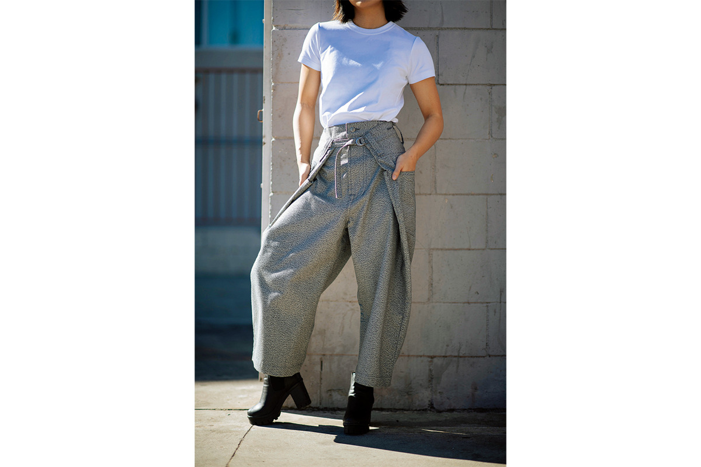
В 2023 году бренд получил золотую награду JR Kyushu за вклад в туризм и развитие городов Кюсю в номинации ремёсел.
Фабрика
Станки в Кокуре
В 2018 году семья открыла в Кокуре свою фабрику «Кокура оримоно сэйдзо», чтобы машинная кокура-ори выходила любыми партиями и в срок. Ширину и рисунок, которые трудно получить вручную, на станках сделать можно, и выбор тканей сразу вырос.
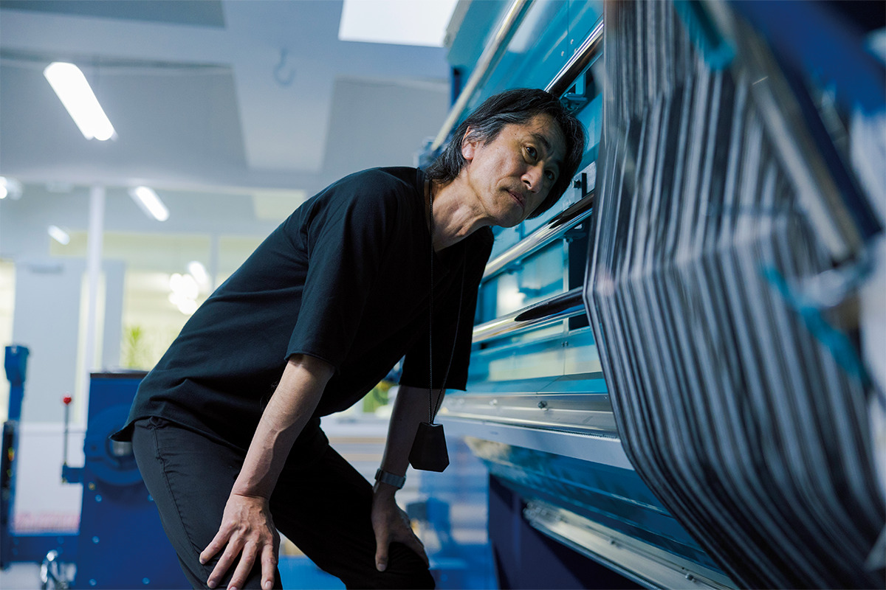
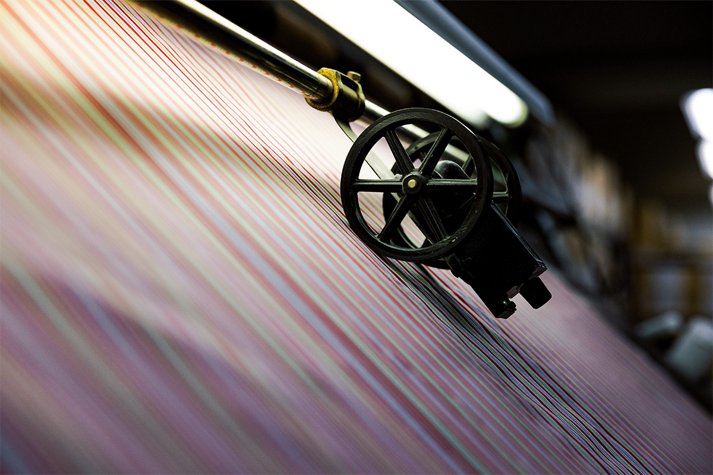
Во время пандемии семья вспомнила, что японский деним вырос из кокура-ори, и начала делать денимную ткань. Ради экологии появилась и ткань из переработанного полиэстера.
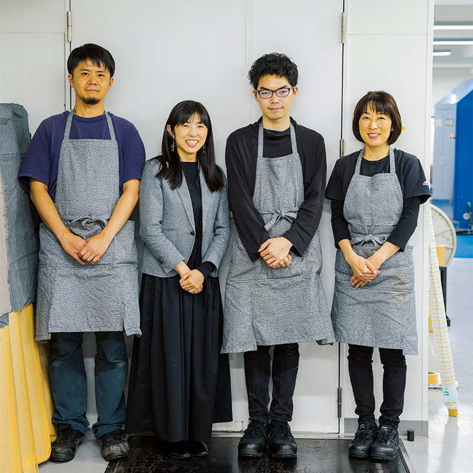
Коллаборации
Полоска в мебели, отелях и аэропорту
Список совместных работ KOKURA SHIMA SHIMA длинный. Одна из самых известных связана с «Круглым креслом» датского дизайнера Ханса Вегнера.
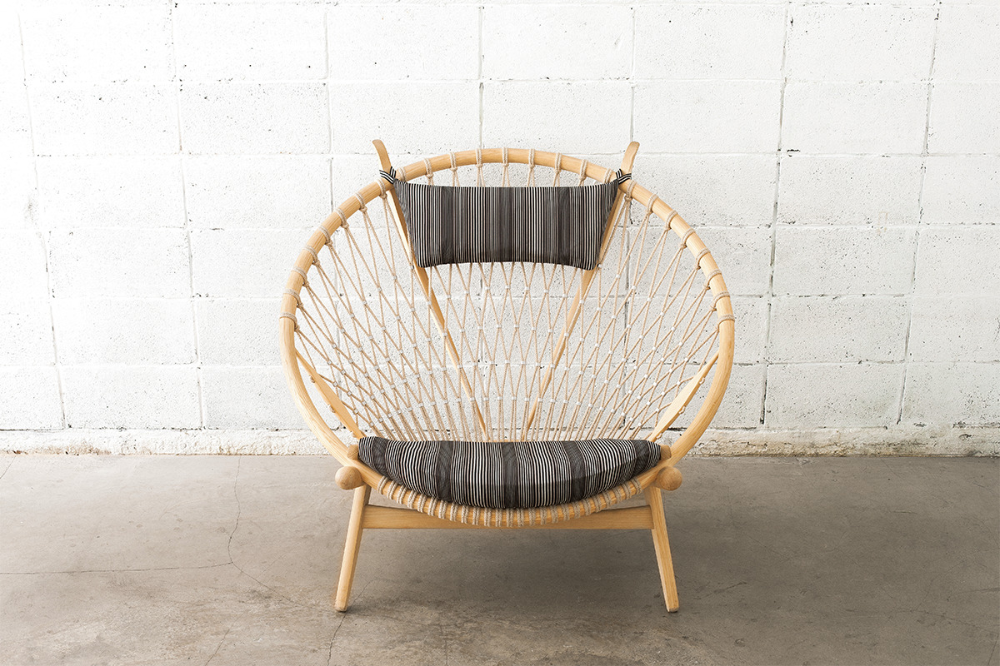
Полосы можно увидеть и в дороге. Кокура-ори родом из Китакюсю, и в зале ожидания внутренних рейсов аэропорта Китакюсю висит панно бренда.
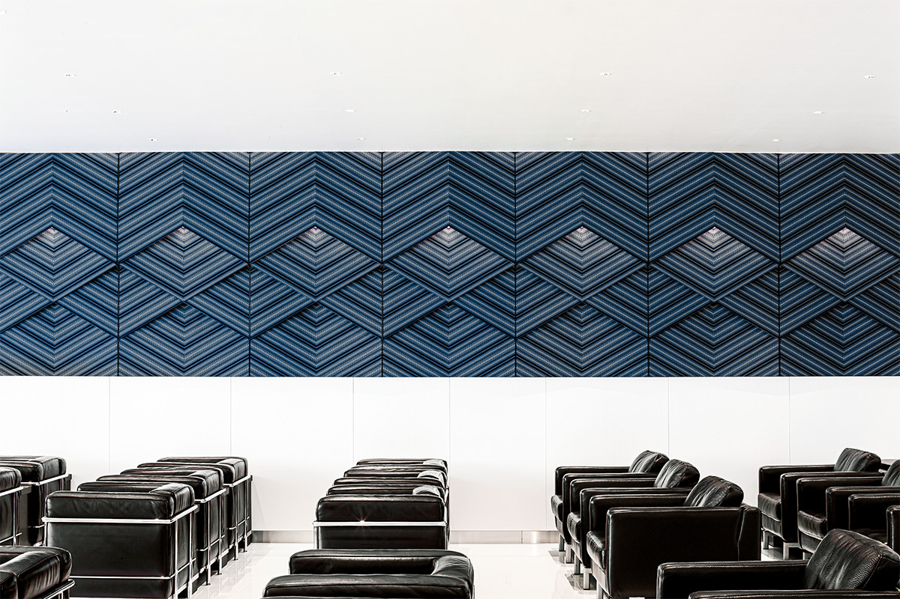
В 2023 году вместе с архитектором Кэнго Кумой бренд запустил интерьерную линию KUMASHIMA. Эти ткани подходят для диванов, штор и перегородок.
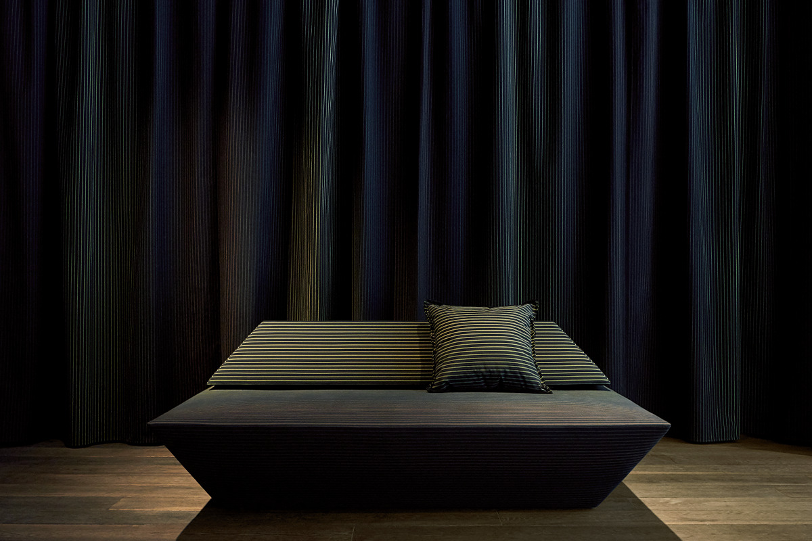
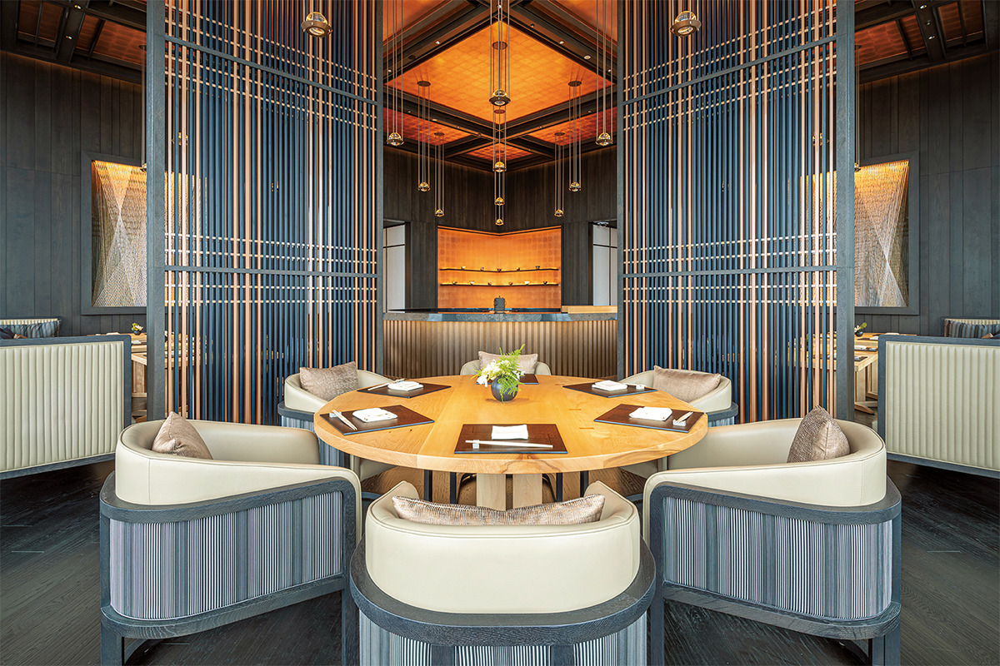
Мастерская
Цвет из веток и листьев
Ручная ткацкая мастерская основательницы бренда прячется в горах на окраине Китакюсю. Здесь красят только природными красителями: цвет берут из растений вокруг, из веток сакуры и сливы, листьев японской мушмулы, желудей.
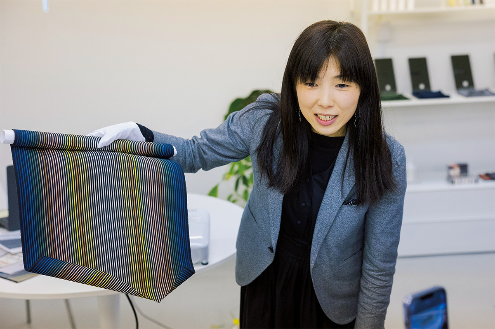
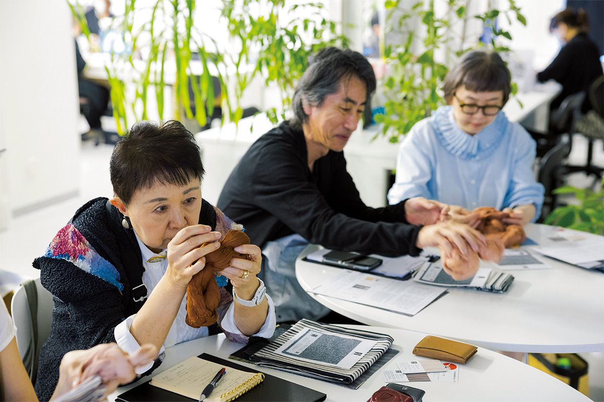
KOKURA SHIMA SHIMA
- Адрес
- префектура Фукуока, Китакюсю, район Кокура-Кита, Отэмати, 3-1, 1-й этаж
- Телефон
- +81 93-561-0700
Фото: Хиромаса Оцука, Кёко Омори, Масаюки Хаяси, Дайки Морита.